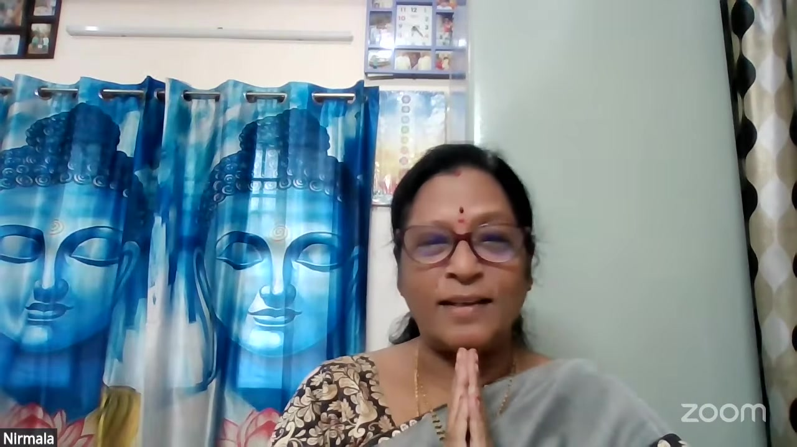

01 · ఈ నెల ఆధ్యాత్మిక జ్ఞానసారం · పూర్తి కథనం
మనలోనే మొదలయ్యే అంతరంగ పరివర్తన
మనం ఇతరులతో శాంతిగా మాట్లాడాలని కోరుకుంటాం. కానీ మాట మారాలంటే ముందుగా మన అంతరంగంలో ఏం జరుగుతోందో గమనించాలి. Speak Peace శ్రేణిలో జ్ఞానోదయం 541వ రోజు నిర్మలా కలేపు గారు మనలో మార్పు అనే అంశాన్ని మార్షల్ రోసెన్బర్గ్ ప్రతిపాదించిన Nonviolent Communication (NVC) దృక్పథంలో వివరించారు. తప్పు జరిగినప్పుడు మనల్ని మనమే నిందించుకోవడం ఎందుకు మార్పుకు అడ్డంకి అవుతుంది? కోపం వెనుక ఉన్న అవసరాన్ని ఎలా గుర్తించాలి? పిల్లలతో, కుటుంబ సభ్యులతో, విద్యార్థులతో మాట్లాడేటప్పుడు కరుణకు స్థానం ఎలా కల్పించాలి? రోసెన్బర్గ్ శిక్షణా సందర్భాలను, విద్యారంగంలోని తన అనుభవాలను, శ్రోతల సందేహాలను కలిపి వక్త ఈ ప్రశ్నలను పరిశీలించారు. మన తప్పులను తీర్పులుగా కాక నేర్చుకునే అవకాశాలుగా చూడటం ఈ ప్రసంగంలోని ప్రధాన సందేశం.
ప్రసంగకర్త: Nirmala Kalepu
అంశం: Speak Peace — Change within Ourselves
మూల వీడియో: https://www.youtube.com/watch?v=p6R333eut6g
మాటలను మార్చే ముందు మన అంతరంగాన్ని చూడాలి
Speak Peace in a World of Conflict పుస్తకం ఆధారంగా సాగుతున్న ఈ శ్రేణిలో మూడవ రోజు అంశాన్ని నిర్మలా కలేపు గారు పరిచయం చేశారు. ఇతరులతో మాట్లాడే తీరు అనేది కేవలం మర్యాదపూర్వక పదాల ఎంపిక మాత్రమే కాదని, మన ఆలోచనల్లోనూ స్పందనల్లోనూ మార్పు అవసరమని వివరించారు. సంఘర్షణ ఉన్నప్పుడు శాంతిగా మాట్లాడటం కష్టమవుతుంది; అందుకే మాట బయటకు వచ్చే క్షణానికి ముందే మనలో ఏర్పడే భావోద్వేగాన్ని గమనించాలి.
ముందటి తరగతుల్లో చర్చించిన NVC నాలుగు దశలను వక్త గుర్తుచేశారు: పరిశీలన, భావాలు, అవసరాలు, అభ్యర్థన. ఏం జరిగిందో తీర్పు లేకుండా చూడటం మొదటి మెట్టు. ఆ సంఘటన మనలో ఏ భావాన్ని కలిగించిందో గుర్తించడం రెండోది. ఆ భావానికి సంబంధించిన తీరిన లేదా తీరని అవసరాన్ని తెలుసుకోవడం మూడోది. చివరగా ఎదుటివారిని నిందించకుండా, బలవంతం చేయకుండా స్పష్టమైన అభ్యర్థన చేయడం నాలుగోది. ఈ పద్ధతి ఇతరులను నియంత్రించేందుకు కాదు; మనకూ వారికి మధ్య అవగాహన పెంచేందుకు ఉపయోగపడుతుందని ప్రసంగం సూచిస్తుంది.
మార్షల్ రోసెన్బర్గ్ తపన: శాంతి కోసం సంభాషణ
మార్షల్ రోసెన్బర్గ్ చేసిన పనిని వక్త కేవలం ఒక కమ్యూనికేషన్ పద్ధతిని బోధించడంగా చూడలేదు. మనుషుల మధ్య హింసాత్మకమైన మాటల స్థానంలో అనుబంధం పెరగాలని ఆయన చేసిన ప్రయత్నంగా వివరించారు. ఈ సేవకు వచ్చిన సహాయాన్ని వ్యక్తిగత ప్రయోజనాల కంటే NVC వ్యాప్తికి వినియోగించారని ప్రసంగంలో పేర్కొన్నారు. ఆ అంకితభావాన్ని బ్రహ్మర్షి పత్రీజీ సేవాభావంతో వక్త పోల్చారు. ఇది వక్త చేసిన ఆధ్యాత్మిక పోలిక; ఇద్దరి జీవితాలు ఒకే విధంగా ఉన్నాయనే చారిత్రక నిర్ధారణ కాదు.
ధ్యానం, ఆధ్యాత్మిక సాధన చేస్తున్నవారికి కూడా తమ మాటల్లో కరుణ ఉందా అని ప్రశ్నించుకోవాల్సిన అవసరం ఉందని వక్త గుర్తుచేశారు. ఆధ్యాత్మిక జ్ఞానం ఉన్నంత మాత్రాన ప్రతిస్పందన ఎప్పుడూ ప్రశాంతంగానే ఉంటుందని అనుకోవద్దు. సాధనలో నేర్చుకున్నదాన్ని కుటుంబంలో, పాఠశాలలో, రోజువారీ సంఘర్షణల్లో ప్రయోగించడం ద్వారానే ఆ జ్ఞానం జీవితానికి దగ్గరవుతుంది.
గతాన్ని నిందించకుండా ఇప్పటి నుంచి నేర్చుకోవడం
గతంలో కోపంతో మాట్లాడిన సందర్భాలు గుర్తొచ్చినప్పుడు మనకు పశ్చాత్తాపం కలగవచ్చు. అయితే ఆ జ్ఞాపకాన్ని పట్టుకుని “నేను ఎంత చెడ్డవాడిని?” అని మనల్ని మనం శిక్షించుకోవడం మరో హింసాత్మకమైన అంతర్గత సంభాషణగా మారవచ్చని వక్త వివరించారు. తెలిసిన జ్ఞానంతో ఇప్పుడు ఎలా ముందుకు సాగాలో చూడటమే ముఖ్యమని చెప్పారు.
మనుషులు సహజంగా ప్రేమతో, పరస్పర సహకారంతో ఉండగలరనే దృక్పథాన్ని వక్త పంచుకున్నారు. సమాజం, పెంపకం, అలవాట్ల ప్రభావంతో విమర్శలు, పోలికలు, శిక్షలు సాధారణ సంభాషణలో భాగమవుతాయని ఆమె వ్యాఖ్యానించారు. ఈ ఆలోచనను చారిత్రక కాలనిర్ణయంగా కాక, మనలోని కరుణను తిరిగి గుర్తించాలనే ప్రసంగ సందేశంగా చదవాలి. గతాన్ని మార్చలేకపోయినా ప్రస్తుత స్పందనను మార్చుకోవచ్చు.
ఒకే తప్పుకు ఒక్కోసారి ఒక్కో ప్రతిస్పందన ఎందుకు?
విద్యారంగంలో తన అనుభవాన్ని పంచుకుంటూ, ఒక విద్యార్థి పెద్ద తప్పు చేసినా కొన్ని సందర్భాల్లో ప్రశాంతంగా స్పందించగలుగుతానని, మరో సందర్భంలో చిన్న విషయానికే తీవ్రంగా స్పందించే అవకాశం ఉంటుందని నిర్మలా గారు ఆత్మపరిశీలన చేశారు. ఇక్కడ విద్యార్థి ప్రవర్తన ఒక్కటే మన కోపాన్ని నిర్ణయించదని ఆమె సూచించారు. ఆ క్షణంలో మన ఒత్తిడి, అంచనాలు, తీరని అవసరాలు కూడా ప్రభావం చూపుతాయి.
అందుకే “వాడు అలా చేశాడు కాబట్టి నాకు కోపం వచ్చింది” అనే సరళమైన వివరణతో ఆగిపోకుండా, “నాకు అప్పట్లో ఏది ముఖ్యంగా అనిపించింది? ఏ అవసరం తీరలేదని భావించాను?” అని ప్రశ్నించుకోవాలి. ఈ ప్రశ్న ఎదుటివారి చర్యకు సమర్థన ఇవ్వదు; మన స్పందనకు బాధ్యత తీసుకునే మార్గాన్ని తెరుస్తుంది.
పిల్లలపై అరిచిన తల్లి: కోపం వెనుక ఉన్న అవసరం
రోసెన్బర్గ్ శిక్షణలో చెప్పిన ఉదాహరణగా ఒక తల్లి తన కుమార్తెతో గట్టిగా మాట్లాడిన సందర్భాన్ని వక్త వివరించారు. తాను మరింత సున్నితంగా చెప్పాల్సిందని ఆ తల్లి బాధపడింది. అయితే ఆ సంఘటనను “నేను చెడ్డ తల్లిని” అనే తీర్పుతో ముగించకుండా, ఆ క్షణంలో ఆమెకు ఏ అవసరం తీరలేదో తెలుసుకునేలా ప్రశ్నలు అడిగిన విధానాన్ని ప్రసంగం పరిశీలించింది.
ఒక అవసరం తీరలేదనే భావన వచ్చినప్పుడు కోపం ఎలా పెరుగుతుందో ఈ ఉదాహరణ చూపిస్తుంది. అదే సమయంలో ఆ తల్లికి తన కుమార్తె పట్ల ప్రేమ లేకపోయిందని దీని అర్థం కాదు. ప్రేమ, ఒత్తిడి, అసహనం ఒకే సమయంలో మనలో ఉండవచ్చు. ప్రవర్తనను మార్చుకోవాలంటే కేవలం కోపాన్ని అణచివేయడం కాక, దాని వెనుక ఉన్న అవసరాన్ని గుర్తించి మరింత సున్నితంగా మాట్లాడే అవకాశాన్ని వెతకాలి.
బాధ నుంచి వివేకానికి: వక్త గుర్తుచేసుకున్న ఉపాధ్యాయుని మాట
తన పదో తరగతి రోజుల్లో ఫిజిక్స్ ఉపాధ్యాయుడు ఆటోగ్రాఫ్ పుస్తకంలో రాసిన ఒక వాక్యాన్ని నిర్మలా గారు గుర్తుచేశారు. బాధ మనిషిని ఆలోచింపజేస్తుంది; ఆలోచన వివేకాన్ని పెంచుతుంది; వివేకం జీవితాన్ని మరింత ఆనందదాయకంగా మార్చగలదనే భావాన్ని ఆ మాటలో చూశారు. ఈ జ్ఞాపకాన్ని NVC అధ్యయనంతో అనుసంధానించారు.
ఇక్కడ బాధను గొప్పదిగా కీర్తించడం ఉద్దేశం కాదు. బాధ కలిగినప్పుడు “నేను ఎందుకు ఇలా చేశాను?” అని మనల్ని మనం దూషించుకోవడానికి బదులుగా, “ఈ సంఘటన నాకు ఏమి నేర్పుతోంది?” అని చూడవచ్చని ఆమె వివరించారు. అదే సంఘటన మరోసారి ఎదురైతే ఎలా స్పందించాలో ఆలోచించే స్థలం అప్పుడు ఏర్పడుతుంది. తప్పును గుర్తించడం అవసరం; తప్పే మన వ్యక్తిత్వమని ముద్ర వేయడం అవసరం లేదు.
తప్పులు తీర్పులు కావు; నేర్చుకునే సమాచారం
రోసెన్బర్గ్ శిక్షణలో పాల్గొన్నవారు తాము చేసిన తప్పుల గురించి మాట్లాడేటప్పుడు “నేను మూర్ఖుడిని”, “అలా చేసి ఉండకూడదు” వంటి స్వీయనిందా పదాలను వాడతారని వక్త వివరించారు. అలాంటి పదాలు మార్పుకు తోడ్పడుతున్నాయా, లేక మనల్ని మరింత కుంగదీస్తున్నాయా అని పరిశీలించమన్నారు. Learning without self-hatred అనే భావాన్ని ఆమె ప్రత్యేకంగా ముందుకు తెచ్చారు.
తప్పును చూసి బాధ్యత తీసుకోవడం, మనల్ని మనం ద్వేషించడం రెండూ వేర్వేరు. మొదటిది ఎదుగుదలకు ఉపయోగపడుతుంది; రెండోది మన దృష్టిని పరిష్కారం నుంచి దూరం చేయవచ్చు. ఓర్పుతో నేర్చుకోవడం, అవసరమైతే క్షమాపణ చెప్పడం, తర్వాతి సందర్భంలో కొత్తగా స్పందించేందుకు ప్రయత్నించడం — ఇవన్నీ కరుణతో కూడిన మార్పులో భాగాలు. విద్యార్థులు మంచి పని చేసినప్పుడు తమను తాము అభినందించుకోవాలని తాను చెప్పే విషయాన్ని కూడా నిర్మలా గారు పంచుకున్నారు. ఆ ప్రోత్సాహం మనం నేర్చుకుంటున్నామనే నమ్మకాన్ని పెంచుతుంది.
ఆలస్యమవుతున్న తల్లి: గౌరవం, సమయపాలన, అపరాధభావం
మరో శిక్షణా ఉదాహరణలో ఒక తల్లి కార్యక్రమానికి ఆలస్యమవుతుందనే ఆందోళనతో పిల్లలపై అరిచింది. తర్వాత తాను మంచి తల్లిని కాదని తీవ్రంగా నిందించుకుంది. ఆమెతో మాట్లాడినప్పుడు సమయానికి చేరుకోవడం, కార్యక్రమాన్ని నిర్వహిస్తున్నవారిని గౌరవించడం తనకు ఎంత ముఖ్యమో స్పష్టమైంది. ఆ అవసరం నెరవేరదనే భయమే ఆ సమయంలో ఒత్తిడిని పెంచిందని చర్చలో వెలుగులోకి వచ్చింది.
ఈ ఉదాహరణలో ప్రధానమైన విషయం ఆమె అరవడాన్ని సమర్థించడం కాదు. సమయపాలన పట్ల శ్రద్ధ అనే విలువను గుర్తించిన తర్వాత, పిల్లలతో మరింత గౌరవంగా మాట్లాడే మార్గాన్ని కనుగొనవచ్చని చూపించడం. పిల్లలను ప్రేమించే వ్యక్తి కూడా ఒత్తిడిలో వారిని బాధపెట్టవచ్చు; ఆ ప్రవర్తనకు బాధ్యత తీసుకుంటూనే స్వీయనింద నుంచి బయటకు రావచ్చని వక్త వివరించారు. QLU తరగతులకు సమయానికి చేరుకోవాలనే తన అనుభవాన్ని కూడా ఆమె ఈ సందర్భానికి అనుసంధానించారు.
స్వీయకరుణ నుంచి ఎదుటివారి అవసరాల అవగాహనకు
మనలోని ఒత్తిడిని అర్థం చేసుకున్న తర్వాత ఎదుటివారి అవసరాలను కూడా వినగలమని ప్రసంగం చెబుతుంది. కోపం వచ్చిన క్షణంలో ఆగి మన భావాన్ని గుర్తించడం, వెంటనే ఆదేశించకుండా అభ్యర్థించడం, ఎదుటివారి మాటను వినడం — ఇవి సాధనతో పెరిగే అలవాట్లు. మార్పు ఒక్కసారిగా సంపూర్ణం కాకపోవచ్చు; అయినా ప్రతి సందర్భాన్ని కొత్తగా చూడవచ్చు.
ప్రశాంతతను ఇతరులకు పంచాలంటే మన అంతరంగంలోనూ శాంతిని పెంపొందించుకోవాలని వక్త అన్నారు. దీనిని కేవలం మాటల నియంత్రణగా చూడకుండా, మనలోని కరుణను బయటికి వ్యక్తపరచే సాధనగా వివరించారు. ధ్యానంలో పెంచుకునే ఎరుకను రోజువారీ సంభాషణల్లో కొనసాగించడం ఈ ఆలోచనకు దగ్గరగా ఉంటుంది.
శ్రోతల ప్రశ్నలు: తెలుసుకున్నా తప్పు చేస్తే?
ప్రసంగం చివరి భాగంలో శ్రోతలు తమ అనుభవాలను, సందేహాలను పంచుకున్నారు. ముఖ్యంగా ధ్యానం చేస్తున్నప్పటికీ, జ్ఞానోదయం తరగతులు వింటున్నప్పటికీ పిల్లలపై కోపం రావచ్చు; అలాంటప్పుడు మనల్ని మనం నిందించుకోకుండా ఎలా ఉండగలం అనే ప్రశ్న వచ్చింది. ఈ సందేహం సిద్ధాంతం నుంచి సాధనకు మారే చోట ఎదురయ్యే నిజమైన కష్టాన్ని బయటపెట్టింది.
వక్త సమాధానంలో ఎరుక, అవసరాల గుర్తింపు, కరుణతో మళ్లీ ప్రయత్నించడం వంటి అంశాలను ప్రాముఖ్యంగా చెప్పారు. కోపం వచ్చిన విషయాన్ని నిరాకరించకుండా, అది ఎందుకు వచ్చిందో పరిశీలించాలి. తప్పు జరిగితే సంబంధాన్ని సరిచేసే ప్రయత్నం చేయాలి. అదే సమయంలో “నేను ఎప్పటికీ మారను” అనే తీర్పును మనపై మోపకూడదు. ఎదుటివారిలో శాశ్వతమైన మార్పు రావాలంటే భయంతో పైకి విధేయంగా ఉండటంకన్నా, కరుణతో ఏర్పడే అవగాహన ముఖ్యమని చర్చలో వెల్లడైంది.
మనలో మార్పే శాంతియుత సంభాషణకు ఆరంభం
ఈ రోజు బోధనలో మళ్లీ మళ్లీ వినిపించిన విషయం: కరుణ అనేది ఇతరులకే కాదు, మనకూ అవసరం. మనల్ని మనం నిందించుకోకుండా బాధ్యత తీసుకోవడం, కోపం వెనుక ఉన్న అవసరాన్ని గుర్తించడం, మాటల్లో అభ్యర్థనకు స్థానం ఇవ్వడం — ఇవన్నీ పరస్పర సంబంధాలను మెరుగుపరచే దిశలో చిన్నచిన్న సాధనలు. ఇతరుల ప్రవర్తనను వెంటనే మార్చలేకపోయినా, మన స్పందనను గమనించి కొత్త మార్గాన్ని ఎంచుకోవచ్చు.
నిర్మలా కలేపు గారి వివరణలో పుస్తకంలోని శిక్షణా ఉదాహరణలు, పాఠశాల అనుభవాలు, గురువుల నుంచి పొందిన ప్రేరణ, శ్రోతల ప్రశ్నలు ఒకే భావం వైపు తీసుకెళ్తాయి: మార్పు విమర్శతో కాదు, అవగాహనతో నిలకడగా పెరుగుతుంది. ఈ రోజు నుంచే మన మాటలను వినడం, వాటి వెనుక ఉన్న భావాలను తెలుసుకోవడం ఆ సాధనకు ప్రారంభం కావచ్చు.